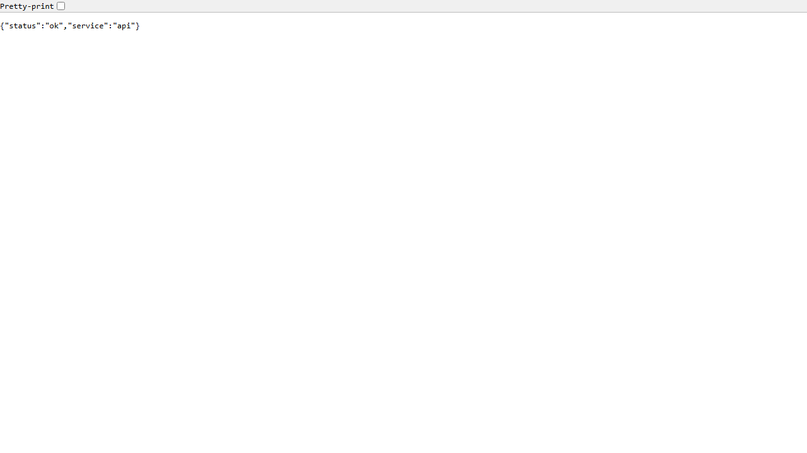
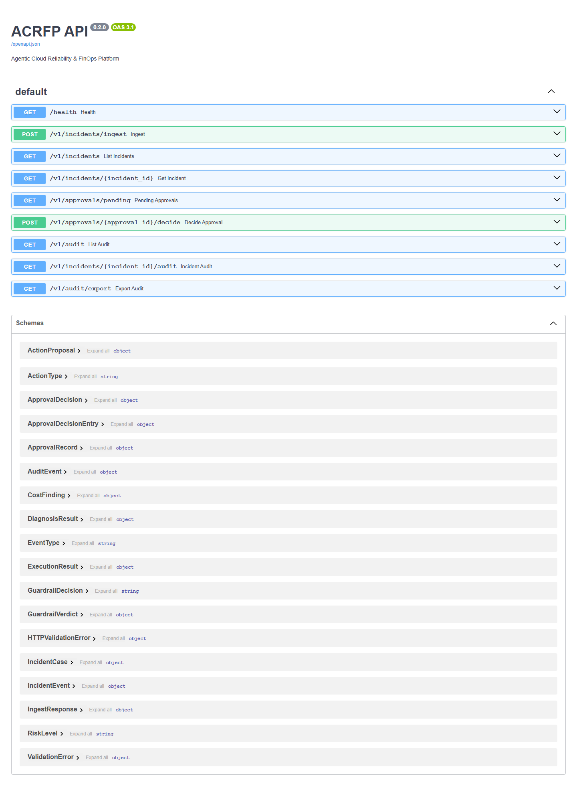
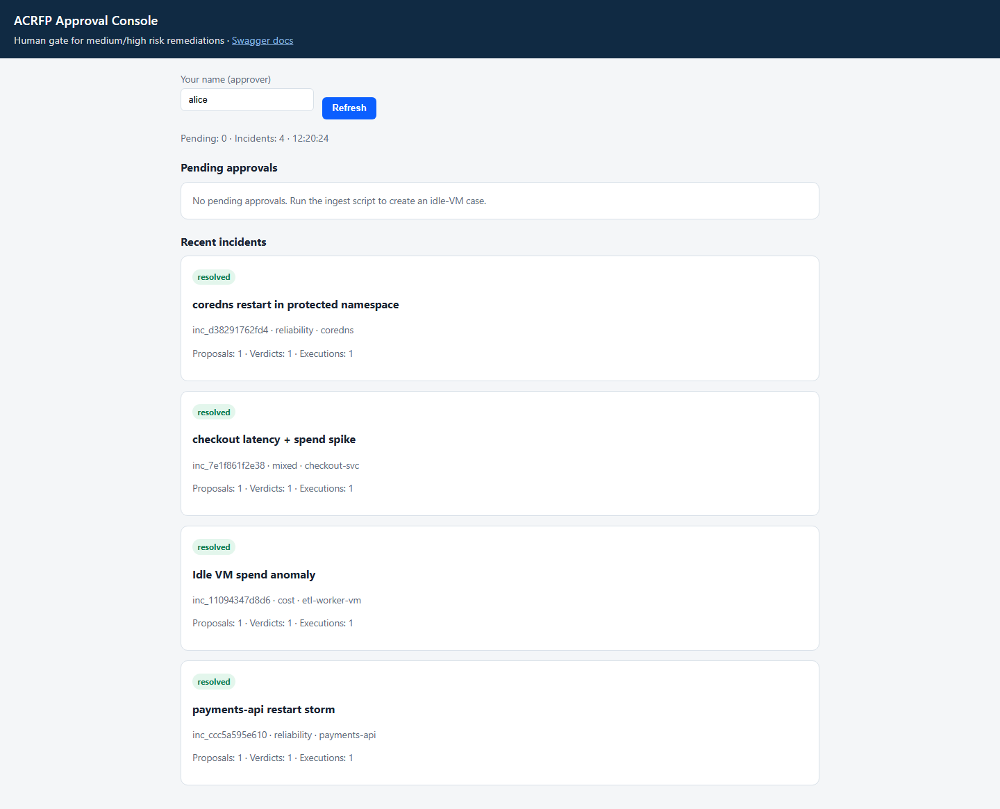

1. One-minute story (say this)
What I built:
A multi-agent reliability + FinOps API on Azure Kubernetes. Alerts come in, LangGraph agents propose diagnosis / cost / remediation,
a policy guardrail decides allow / require human approval / deny, and only then a dry-run executor runs.
High-risk actions never auto-execute — they wait in /ui. Everything is audited.
This HTML file works offline. Screenshots and JSON below were captured from the real deployment at
https://api.acrfp.site. The AKS cluster may be stopped to save cost — the evidence remains.
2. Architecture (show these diagrams)
Platform flow
Figure A — Alert → API → Diagnosis/Cost/Remediation agents → Guardrail → Executor or /ui → Audit.
Frontend vs backend
Figure B — Same FastAPI backend powers Swagger /docs and the approval UI /ui.
Interview point: Agents never call kubectl/ARM directly. Risk comes from action type + parameters in the guardrail, not from the LLM “rating itself”.
3. Live deployment proof
| Check | What interviewer should see | Status |
|---|
| Public HTTPS |
https://api.acrfp.site/health with Let’s Encrypt cert |
Done |
| Ingress + DNS |
GoDaddy api.acrfp.site → nginx Ingress LB on AKS |
Done |
| Approval UI |
/ui dual-approve for high-risk remediations |
Done |
| Audit trail |
/v1/audit shows ingest → decision → dry-run / approval |
Done |
| Azure AI Foundry LLM |
Config ready; switch LLM_PROVIDER=azure_foundry |
Next |
Screenshot — Health

Missing screenshots/01-health.png — run scripts/capture_interview_evidence.ps1 while AKS is up
'" />
Figure 1 — Cluster-served health JSON over HTTPS (not local uvicorn).
Screenshot — Swagger /docs

Missing screenshots/02-swagger-docs.png — run capture script
'" />
Figure 2 — OpenAPI surface: ingest, incidents, approvals, audit.
Screenshot — Approval UI

Missing screenshots/03-approval-ui.png — run capture script
'" />
Figure 3 — Human-in-the-loop queue for high-risk actions.
4. End-to-end walkthrough (what I actually ran)
- Ingest samples — CoreDNS CrashLoop (HIGH), Idle VM waste (MEDIUM), low-risk path.
- Agents — Diagnosis / Cost / Remediation produce structured proposals.
- Guardrail — HIGH remediation →
require_approval; low-risk → allow + dry-run.
- Human — Approve twice in
/ui (dual control) for production-like safety.
- Audit — Every step recorded for compliance storytelling.
Sample health response (captured)
Loading api-dumps/01-health.json…
Incidents after ingest (captured)
Loading api-dumps/02-incidents.json…
Audit trail excerpt (captured)
Loading api-dumps/03-audit.json…
Say this:
“I deliberately keep execution in dry-run for the portfolio stage. The control plane (policy + approval + audit) is the hard part for enterprise Azure roles — live kubectl can be flipped when governance is ready.”